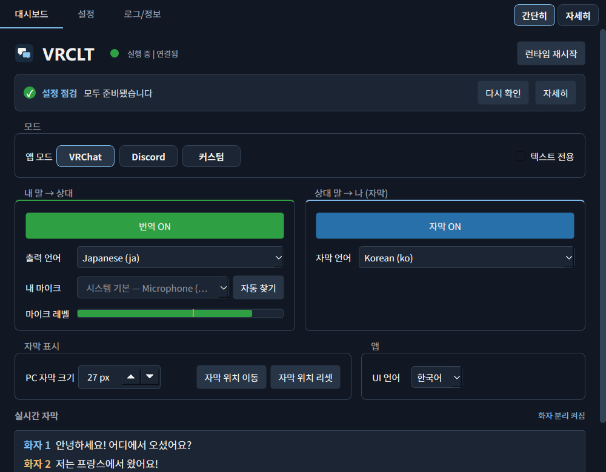
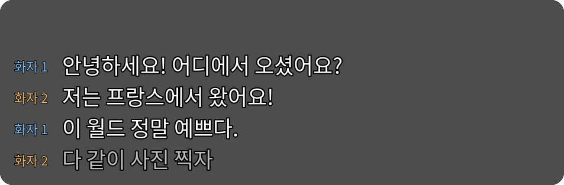
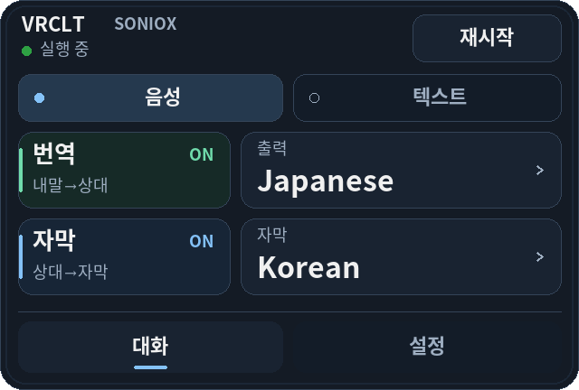
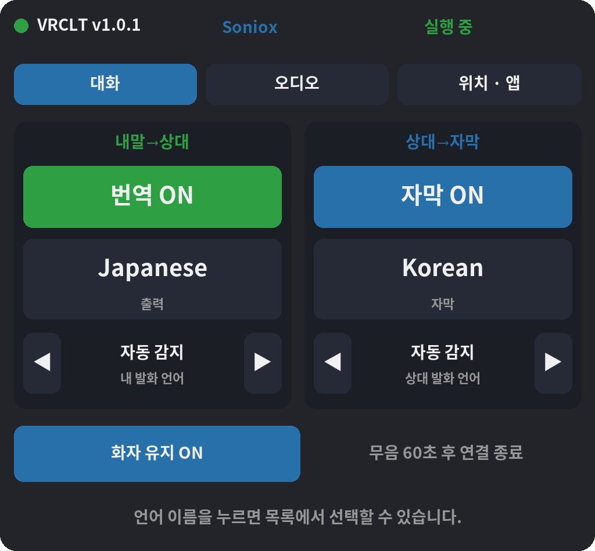

내 말을 다른 언어로 전달합니다.
마이크에 말하면 번역된 음성이 VRChat이나 Discord로 전달됩니다. 상대에게 들려줄 언어를 직접 고를 수 있습니다.
VOICE TRANSLATION / LIVE SUBTITLES
v1.0 정식 출시
VRCLT는 마이크 음성을 번역해 VRChat과 Discord로 보내고, 상대방의 말을 번역 자막으로 보여 주는 Windows 앱입니다.
Windows · 개인 API 키 · 음성 출력용 VB-Cable

마이크에 말하면 번역된 음성이 VRChat이나 Discord로 전달됩니다. 상대에게 들려줄 언어를 직접 고를 수 있습니다.
상대가 하는 말을 원하는 언어의 자막으로 읽습니다. 앱 화면과 데스크톱, SteamVR 안에서 볼 수 있습니다.
손목 메뉴에서 언어를 바꾸고, SteamVR 대시보드에서 설정을 조정하세요. 번역을 VRChat 챗박스로 보낼 수도 있습니다.
Interface / Desktop & VR
데스크톱 대시보드, 번역 자막, 손목 메뉴와 SteamVR 설정 화면을 확인할 수 있습니다.



v1.0 앱 화면에 예시 대화를 넣어 만든 이미지입니다. 헤드셋 실행 화면을 촬영한 것은 아닙니다.
Setup / Windows
GitHub 릴리스에서 Windows 실행 파일을 내려받아 실행하세요. 배포 파일은 Python 설치 없이 사용할 수 있습니다.
다운로드 페이지사용할 번역 엔진을 고르고 해당 서비스에서 API 키를 발급받아 설정에 입력하세요. 서비스 이용 요금은 별도입니다.
번역 엔진 보기VB-Cable을 설치하세요. 번역 음성은 CABLE Input으로 보내고, 사용할 앱의 마이크는 CABLE Output으로 설정합니다.
VB-CableTranslation engines
Gemini Live, Qwen LiveTranslate, OpenAI Realtime, Soniox를 지원합니다. 지원 언어와 목소리, 요금은 서비스와 모델에 따라 다릅니다.
엔진별 설정 방법앱 자체는 MIT 라이선스의 오픈소스입니다. 번역은 직접 발급받은 API 키로 사용하며, 선택한 서비스에서 이용 요금을 청구할 수 있습니다. 시작 전에 해당 서비스의 요금과 잔액을 확인하세요.
아니요. Windows PC만으로 음성 번역과 데스크톱 자막을 사용할 수 있습니다. VR 안에서 자막과 손목 메뉴를 쓰려면 SteamVR이 필요합니다.
음성은 선택한 번역 서비스로 전송되어 처리됩니다. API 키와 앱 설정은 내 PC에 저장됩니다. 사용 전에 선택한 서비스의 데이터 처리 정책을 확인해 주세요.
네. GitHub에서 v1.0 Windows 실행 파일을 받을 수 있습니다. 설정 점검, 오디오 자동 설정, 간편 화면이 포함되어 있습니다. 다운로드 버튼은 공개된 최신 릴리스로 연결됩니다.
GitHub에서 최신 Windows 버전과 릴리스 노트를 확인하세요.